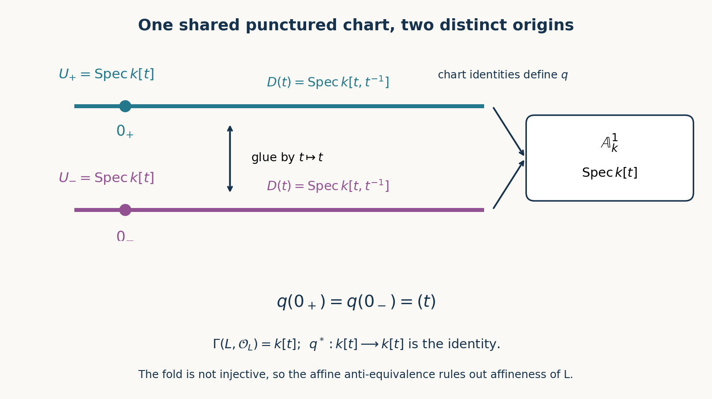

Schemes, gluing and immersions
Written by OpenAI GPT-6.1 Sol in Codex at Ultra; writing-AI self-check completed. No independent review is claimed. Original exposition, proofs, exercises and figures: CC0.
An affine scheme records a ring locally. A scheme lets different rings describe different open parts of the same space. The gluing maps must match both the topology and the rings, and their cocycle condition is what makes the result unambiguous. This lesson constructs that gluing, distinguishes open and closed immersions from merely injective morphisms, and explains how local rings, field-valued points and infinitesimal points read the resulting geometry.
The prerequisite is Affine schemes, especially Theorem 3.2 on quasi-coherent modules and Theorem 4.1 on maps into an affine scheme. We also use the sheaf gluing and stalk criteria of the first lesson. All rings are commutative with identity. Schemes need not be separated, quasi-compact, Noetherian or of finite type. Local rings at points are nonzero; the empty scheme is allowed.
1. Local affine charts
A scheme is a locally ringed space \((X,\mathcal O_X)\) such that every point has an open neighbourhood isomorphic, as a locally ringed space, to \(\operatorname{Spec}R\) for some ring \(R\). A morphism of schemes is a morphism of locally ringed spaces. In particular, its stalk homomorphism
\[ \mathcal O_{Y,f(x)}\longrightarrow\mathcal O_{X,x} \]is local: the inverse image of the maximal ideal is the maximal ideal. Recall that an arbitrary continuous map with arbitrary ring maps does not meet this requirement.
Theorem 1.1. Every open subset \(W\subset X\), with the restricted structure sheaf, is a scheme. Affine open subschemes form a basis of the topology. The underlying space of every scheme is sober: every nonempty irreducible closed subset has exactly one generic point.
Proof. Given \(x\in W\), choose an affine neighbourhood \(U=\operatorname{Spec}R\) of \(x\) in \(X\). Distinguished opens form a basis on \(U\), so there is a \(D(f)\) with \(x\in D(f)\subset U\cap W\). The previous lesson's Proposition 1.3 identifies its restricted locally ringed space with \(\operatorname{Spec}R_f\). This proves both the open-subscheme assertion and the affine-basis assertion.
A scheme is a \(T_0\) space. Indeed, for distinct \(x,y\), an affine open containing \(x\) either excludes \(y\), or contains both and separates them by an affine distinguished open: distinct primes contain different elements. Thus distinct points cannot have the same closure.
Now let \(Z\subset X\) be nonempty, closed and irreducible. Choose an affine open \(U\) meeting \(Z\). The nonempty closed subset \(Z\cap U\) is irreducible in \(U\). The generic-point theorem for spectra, Spectra of rings, Theorem 4.1, gives it a generic point \(\eta\). Every open \(V\) of \(X\) meeting \(Z\) also meets \(U\cap Z\): two nonempty opens in the irreducible space \(Z\) intersect. The open \(V\cap U\cap Z\) therefore contains \(\eta\). Hence every neighbourhood of every point of \(Z\) contains \(\eta\), so \(Z\subset\overline{\{\eta\}}\). The reverse inclusion holds because \(Z\) is closed and contains \(\eta\). Uniqueness follows from the \(T_0\) assertion. \(\square\)
No finiteness assumption entered this argument. In particular, a nonclosed generic point is part of the space, not an extra symbol attached to its closed points.
2. Gluing schemes and their morphisms
Let \(X_i\) be schemes indexed by a set. For each ordered pair choose an open subscheme \(U_{ij}\subset X_i\) and an isomorphism
\[ g_{ij}:U_{ij}\longrightarrow U_{ji}. \]Require \(U_{ii}=X_i\), \(g_{ii}=1\), \(g_{ji}=g_{ij}^{-1}\), and, for every triple,
\[ g_{ij}(U_{ij}\cap U_{ik})=U_{ji}\cap U_{jk},\qquad g_{jk}g_{ij}=g_{ik}\text{ on }U_{ij}\cap U_{ik}. \tag{2.1} \]The first equality specifies the domain of the second composite. It cannot be omitted from gluing data.
Theorem 2.1 (gluing). Such data determine a scheme \(X\) and open immersions \(j_i:X_i\to X\) covering \(X\), with \(j_i^{-1}(j_j(X_j))=U_{ij}\) and \(j_jg_{ij}=j_i\) there. The result is unique up to a unique isomorphism respecting these maps. For every scheme \(T\), morphisms \(X\to T\) are exactly families \(f_i:X_i\to T\) with \(f_jg_{ij}=f_i\) on the overlaps. More generally, morphisms from any scheme to a fixed target glue uniquely over an open cover of the source.
Proof. On the disjoint union of the \(X_i\), declare \(x\in X_i\) equivalent to \(g_{ij}(x)\) when \(x\in U_{ij}\). Reflexivity and symmetry are among the assumptions. If \(x\) is related to \(y=g_{ij}(x)\) and \(y\) to \(z=g_{jk}(y)\), the domain identity in (2.1), used also with the inverse map, says \(x\in U_{ik}\). The cocycle identity says \(z=g_{ik}(x)\). Thus this relation is transitive, with no further identifications within a single chart.
Give the quotient \(X\) the quotient topology. For an open \(V\subset X_i\), the inverse image of its image in \(X_j\) is \(g_{ij}(V\cap U_{ij})\), an open subset. Its image is consequently open in the quotient, and \(X_i\) maps homeomorphically onto that image. The overlap is exactly the image of \(U_{ij}\).
The sheaf of rings on an open \(W\subset X\) can now be written explicitly as
\[ \mathcal O_X(W)=\left\{(s_i):s_i\in\mathcal O_{X_i}(j_i^{-1}W),\quad s_i|_{U_{ij}\cap j_i^{-1}W}=g_{ij}^{\#}(s_j|_{U_{ji}\cap j_j^{-1}W})\right\}. \tag{2.2} \]Restriction acts coordinatewise. Compatible tuples glue coordinatewise using the sheaf condition on each chart, so (2.2) is a sheaf. Restricting it to a chart gives its original structure sheaf: a section on that chart transports to every overlapping chart by \(g_{ij}\), and (2.1) guarantees compatibility. Its stalks are therefore the original local rings. Affine neighbourhoods in the charts show that \(X\) is a scheme and each \(j_i\) an open immersion.
Given compatible \(f_i\), their continuous maps descend uniquely through the quotient. If \(V\subset T\) is open, pull a section of \(\mathcal O_T(V)\) back by each \(f_i\). Compatibility makes these pullbacks a tuple in (2.2) on \(f^{-1}V\). This defines the sheaf homomorphism of the descended map. Its stalk map near any point is that of an \(f_i\), hence is local. Conversely restriction of a morphism yields precisely such a family. Uniqueness follows both on points and on all section pullbacks. This also proves the final assertion for a source already given with an open cover; its topology and structure sheaf are recovered by this same construction. Applying the mapping property to two glued objects gives their unique comparison isomorphism. \(\square\)
Example 2.2 (the projective line). Glue \(U_0=\operatorname{Spec}k[t]\) and \(U_\infty=\operatorname{Spec}k[s]\) on their distinguished nonzero opens by \(s=t^{-1}\). There are only two charts, so the inverse condition supplies the cocycle condition. Call the result \(\mathbb P^1_k\). Its global sections are
\[ \Gamma(\mathbb P^1_k,\mathcal O)=k[t]\cap k[t^{-1}]=k, \qquad\text{intersection inside }k[t,t^{-1}]. \tag{2.3} \]Uniqueness of Laurent coefficients forbids both positive and negative powers in an element of the intersection. In particular \(\mathbb P^1_k\) is not affine. Were it affine, its global ring would identify it with \(\operatorname{Spec}k\), which has one point, whereas the chart origins \(t=0\) and \(s=0\) are distinct points.
Example 2.3 (two origins). Glue two copies \(U_+,U_-\) of \(\operatorname{Spec}k[t]\) on \(D(t)\) using the identity coordinate. Denote the result by \(L\). Its two origins remain distinct. The sheaf equalizer gives
\[ \Gamma(L,\mathcal O_L)=\{(a,b)\in k[t]^2:a=b\text{ in }k[t,t^{-1}]\}\cong k[t]. \]The identity maps of the two charts into \(\mathbb A^1_k\) glue to a morphism \(q:L\to\mathbb A^1_k\). On global sections it induces the identity of \(k[t]\), but it sends both origins to \((t)\). If \(L\) were affine, the affine anti-equivalence would make \(q\) an isomorphism. Therefore \(L\) is not affine. Global functions have forgotten which origin they are near.

Figure 1. The two copies of \(D(t)=\operatorname{Spec}k[t,t^{-1}]\) are identified, and the origins are not. The arrows to \(\operatorname{Spec}k[t]\) agree on the overlap and define \(q\). Each horizontal mark represents a chart schematically; it is not a drawing of its Zariski topology or of all its primes. The nonaffineness argument is Example 2.3.
Example 2.4 (infinitely many components). An arbitrary disjoint union of schemes is the gluing with empty overlaps. For an infinite set \(I\), the scheme \(\coprod_{i\in I}\operatorname{Spec}k\) has an open cover by its individual components with no finite subcover. It is not quasi-compact, hence cannot be affine. Its section ring is the product \(\prod_I k\); taking the spectrum of this ring would add points rather than recover the disjoint union.
3. Open and closed immersions
An open immersion identifies the source with an open subset of the target with its restricted structure sheaf. A closed immersion of locally ringed spaces is a morphism \(i:Z\to X\) which is a homeomorphism onto a closed subset, whose structure map \(\mathcal O_X\to i_*\mathcal O_Z\) is surjective as a sheaf map, and whose kernel is locally generated by sections as an \(\mathcal O_X\)-module. The generators may form an arbitrary family on one neighbourhood; they need not be finite. This is the convention from the second lesson and [Stacks, Tag 01HK]. A locally closed immersion, or simply immersion, is a closed immersion into an open subscheme followed by that open immersion.
Surjectivity of a sheaf map means surjectivity on stalks. It does not in general mean surjectivity on sections of every open set. The affine case below supplies such a section statement because the relevant sheaves are quasi-coherent.
Theorem 3.1 (closed immersions into an affine scheme). Let \(X=\operatorname{Spec}R\), and let \(i:Z\to X\) be a closed immersion of locally ringed spaces, with \(Z\) a scheme. There is a unique ideal \(I\subset R\) for which \(i\) is isomorphic over \(X\) to
\[ \operatorname{Spec}(R/I)\longrightarrow\operatorname{Spec}R. \tag{3.1} \]Conversely, (3.1) is a closed immersion for every ideal, without any finite generation assumption.
Proof. Write \(\mathcal I=\ker(\mathcal O_X\to i_*\mathcal O_Z)\). On a neighbourhood with generators indexed by \(J\), its quotient is the cokernel of \(\mathcal O^{(J)}\to\mathcal O\). This is a quasi-coherent local presentation. Hence \(i_*\mathcal O_Z\) is quasi-coherent. On an affine neighbourhood, the kernel of this map from \(\mathcal O\) is quasi-coherent by the previous lesson's affine equivalence and exact localization. Quasi-coherence is local, so \(\mathcal I\) is quasi-coherent on \(X\). That equivalence gives
\[ \mathcal I=\widetilde I,\qquad i_*\mathcal O_Z=\widetilde{R/I},\qquad I=\ker\bigl(R\to\Gamma(Z,\mathcal O_Z)\bigr). \tag{3.2} \]Here the algebra structure on the second equality is also the quotient algebra structure, since the original map is a surjection of sheaves of rings.
At a point \(x\) in the closed image of \(i\), the stalk of \(i_*\mathcal O_Z\) is the stalk of \(\mathcal O_Z\) at the corresponding point: intersections with neighbourhoods of \(x\) are cofinal among its neighbourhoods in the closed subspace. This ring is nonzero. Outside the image the stalk is zero. On the other hand, \((R/I)_{\mathfrak p}\ne0\) exactly when \(I\subset\mathfrak p\). If an element of \(I\) is outside \(\mathfrak p\), it becomes a unit and kills the quotient. If \(I\subset\mathfrak p\), the quotient of \(R_{\mathfrak p}\) by its proper ideal \(IR_{\mathfrak p}\) is nonzero. Thus the image of \(i\) is exactly \(V(I)\).
Prime correspondence makes (3.1) a homeomorphism onto this same \(V(I)\). Its direct-image structure sheaf is \(\mathcal O_X/\widetilde I\): on \(D(f)\) the quotient map is \(R_f\to(R/I)_f\), with kernel \(I_f\), compatibly on the basis. This is also the direct-image sheaf in (3.2). A closed embedding of spaces recovers a sheaf on its image by inverse image of its direct image; this can be checked on stalks, which have just been identified. Consequently these ring sheaves identify the two sources as locally ringed spaces over \(X\). All comparison stalk maps are isomorphisms, so this is a scheme isomorphism. Equation (3.2) proves uniqueness of \(I\).
For the converse, prime correspondence gives the closed-image topology, and the stalk map is \(R_{\mathfrak p}\to R_{\mathfrak p}/IR_{\mathfrak p}\), a local surjection. The kernel \(\widetilde I\) is generated as a sheaf by the global elements of \(I\), as the fraction description shows. Thus all three closed-immersion conditions hold. \(\square\)
Proposition 3.2. Every immersion is a monomorphism of schemes.
Proof. For an open immersion, a factorization through the image is forced on points and on the restricted structure sheaf. For a closed immersion, suppose \(ia=ib\) for maps \(a,b:T\to Z\). Injectivity on points gives \(a(t)=b(t)\) at every \(t\). Their maps from \(\mathcal O_{Z,a(t)}\) to \(\mathcal O_{T,t}\) agree after composition with the surjection from \(\mathcal O_{X,i(a(t))}\); they therefore agree. Stalkwise equality of sheaf morphisms gives \(a=b\). Composites of monomorphisms are monomorphisms. \(\square\)
Different ideals can give the same underlying closed set. For example, \(\operatorname{Spec}k[t]/(t)\) and \(\operatorname{Spec}k[t]/(t^2)\) both map onto the origin in \(\mathbb A^1_k\), but their local rings differ. The scheme structure retains those nilpotents. The later lesson Closed subschemes and scheme-theoretic images develops the classification by ideal sheaves on an arbitrary scheme.
4. Local rings, residue fields and infinitesimal points
For \(x\in X\), write \(\mathfrak m_x\) for the maximal ideal of \(\mathcal O_{X,x}\) and \(\kappa(x)=\mathcal O_{X,x}/\mathfrak m_x\) for its residue field. A point \(y\) is a specialization of \(x\) if \(y\in\overline{\{x\}}\); equivalently every neighbourhood of \(y\) contains \(x\). Then \(x\) is a generization of \(y\).
Theorem 4.1 (the local scheme at a point). There is a canonical morphism
\[ \ell_x:\operatorname{Spec}\mathcal O_{X,x}\longrightarrow X. \]It sends the closed point to \(x\) and is universal in the following sense. If \(A\) is a nonzero local ring and \(f:\operatorname{Spec}A\to X\) sends its closed point to \(x\), there is a unique factorization through \(\ell_x\), induced by a local homomorphism \(\mathcal O_{X,x}\to A\). The point map of \(\ell_x\) is injective, and its image consists exactly of the generizations of \(x\).
Proof. Any open of \(\operatorname{Spec}A\) containing its closed point is the whole space: a distinguished neighbourhood \(D(a)\) of the maximal ideal has \(a\) a unit. Choose an affine neighbourhood \(U=\operatorname{Spec}R\) of \(x\), with \(x\) corresponding to \(\mathfrak p\). Its stalk is \(R_{\mathfrak p}\). Localization defines \(\operatorname{Spec}R_{\mathfrak p}\to U\to X\). The closed point maps to \(\mathfrak p\). Its inverse image of every neighbourhood of \(x\) is the whole local spectrum, by the preceding observation.
If a second affine neighbourhood is chosen, both maps land in an affine neighbourhood \(W\) of \(x\) inside their intersection. Their maps on \(\Gamma(W,\mathcal O_W)\) are both the germ map to \(\mathcal O_{X,x}\). The affine-target mapping theorem identifies the two morphisms. This proves independence and defines \(\ell_x\).
The given \(f\) lands in \(U\), because \(f^{-1}U\) contains the closed point. Its ring map \(R\to A\) contracts the maximal ideal of \(A\) to \(\mathfrak p\), so every element of \(R\setminus\mathfrak p\) maps to a unit. It extends uniquely to \(R_{\mathfrak p}\to A\), and that extension is local. The affine anti-equivalence proves existence of the factorization. It also proves uniqueness: any such factorization induces an extension of this same \(R\to A\), which is forced by localization.
The primes of \(R_{\mathfrak p}\) correspond injectively to the primes \(\mathfrak q\subset\mathfrak p\), precisely the generizations of \(\mathfrak p\) in \(U\). Any generization of \(x\) in \(X\) lies in \(U\), and specialization in an open subspace is the restriction of specialization in the whole space. This proves the final assertion. \(\square\)
Corollary 4.2 (field-valued points). For any field \(K\), morphisms \(\operatorname{Spec}K\to X\) correspond bijectively to pairs
\[ (x,\sigma),\qquad x\in X,\quad\sigma:\kappa(x)\hookrightarrow K \text{ a field homomorphism}. \]Proof. Apply Theorem 4.1 to the local ring \(K\). A local map \(\mathcal O_{X,x}\to K\) has kernel containing \(\mathfrak m_x\), and induces a unital field map from \(\kappa(x)\), necessarily injective. Conversely compose any such field map with the residue quotient. This is local and gives the required morphism. Both constructions reverse each other. \(\square\)
For a \(k\)-scheme and maps over \(k\), the field map must respect the specified \(k\)-structure. A \(k\)-valued point is therefore a point together with a compatible identification \(\kappa(x)\cong k\). Merely having a point of the underlying space is a different assertion.
Proposition 4.3 (tangent vectors). Let \(X\) be a \(k\)-scheme, and let \(x\in X(k)\). The maps over \(k\) from \(\operatorname{Spec}k[\epsilon]/(\epsilon^2)\) to \(X\) restricting to \(x\) are naturally the elements of
\[ T_xX=\operatorname{Hom}_k(\mathfrak m_x/\mathfrak m_x^2,k). \tag{4.1} \]Proof. The dual-number ring is local, with residue field \(k\). By Theorem 4.1 a map with the specified residue point is a local \(k\)-algebra homomorphism from \(B=\mathcal O_{X,x}\). It has a unique expression
\[ a\longmapsto a(x)+\epsilon d(a), \]where \(d\) is \(k\)-linear. Multiplicativity says \(d(ab)=a(x)d(b)+b(x)d(a)\). It implies \(d(\mathfrak m_x^2)=0\); the map thus gives a linear functional on \(\mathfrak m_x/\mathfrak m_x^2\). Conversely, given such a functional \(\lambda\), set \(d(a)=\lambda(a-a(x)\bmod\mathfrak m_x^2)\). The product expansion shows the Leibniz rule, since the product of the two maximal-ideal parts is zero in the quotient. This constructs a \(k\)-algebra map to dual numbers. Its residue is the prescribed quotient, so it is local. The two constructions are inverse. \(\square\)
Allowing all residue points gives the disjoint union of these tangent spaces over \(X(k)\). Dual-number points detect information that field-valued points erase: every field kills every nilpotent, whereas \(\epsilon\) is available to record a first-order direction.
5. Removing nilpotents
A scheme is reduced if all its local rings are reduced, meaning that they have no nonzero nilpotent elements.
Lemma 5.1. A scheme is reduced if and only if the ring of sections on every open subset is reduced. An affine scheme \(\operatorname{Spec}R\) is reduced if and only if \(R\) is reduced. If \(N_R\) is the nilradical of \(R\), then
\[ N_{R_f}=(N_R)_f. \tag{5.1} \]Proof. If all stalks are reduced and \(s^n=0\) on an open set, every germ of \(s\) is zero, hence \(s=0\). Conversely, a nilpotent germ has a representative \(s\) whose power has zero germ. Shrink the neighbourhood until \(s^n=0\) as a section. Reducedness of that section ring then makes the original germ zero.
If \(R\) is reduced, any nilpotent fraction \(a/s\) in a localization has \(ta^n=0\) for some allowed denominator \(t\). Then \((ta)^n=0\), so \(ta=0\), and the fraction is zero. Thus every local ring of its spectrum is reduced. The converse follows by the first assertion and \(\Gamma(\operatorname{Spec}R,\mathcal O)=R\).
For (5.1), one inclusion is immediate. If \(a/f^r\) is nilpotent, then \(f^m a^n=0\) for some \(m,n\). The element \(f^m a\) is nilpotent, since its \(n\)-th power is zero. Rewrite the original fraction as \((f^m a)/f^{r+m}\). This gives the other inclusion. \(\square\)
Theorem 5.2 (reduction). Every scheme has a canonical reduced scheme \(X_{\mathrm{red}}\) and a closed immersion \(r:X_{\mathrm{red}}\to X\) inducing the identity of underlying spaces. Every morphism from a reduced scheme \(Y\) to \(X\) factors uniquely through \(r\).
Proof. Let \(\mathcal N\subset\mathcal O_X\) consist of sections whose germs are nilpotent at every point. Equivalently, each point has a neighbourhood on which a power of the section is zero. This condition is local and defines a sheaf of ideals; sums of nilpotents are nilpotent in commutative rings by the binomial expansion. Its stalk is the nilradical of the structure-ring stalk.
On an affine \(U=\operatorname{Spec}R\), a section locally killed by possibly different powers is killed by one power: take a finite subcover of its nilpotence neighbourhoods and the largest of their exponents, then use the sheaf uniqueness axiom. This identifies \(\mathcal N(U)\) with \(N_R\), and the same holds on every distinguished open. Equation (5.1) and the basis description therefore show that \(\mathcal N|_U=\widetilde{N_R}\). Put
\[ X_{\mathrm{red}}=(X,\mathcal O_X/\mathcal N). \]The quotient locally ringed space on \(U\) is \(\operatorname{Spec}(R/N_R)\) by Theorem 3.1's explicit quotient construction. Every prime contains \(N_R\), so its underlying space is all of \(U\). The quotient ring is reduced: if a power of a residue class is zero, some power of its representative lies in the nilradical, forcing the representative itself into it. Therefore \(X_{\mathrm{red}}\) is a reduced scheme. Its map to \(X\) has a surjective structure map and kernel locally generated by \(N_R\) on each affine chart, so is a closed immersion.
Let \(f:Y\to X\) have reduced source. Its homomorphism on each stalk kills the nilradical, since nilpotents map to nilpotents and the receiving ring is reduced. Thus its sheaf map kills \(\mathcal N\), by the stalk criterion, and factors uniquely through the quotient sheaf. The resulting stalk map is local: quotienting by nilpotents does not change the maximal ideal modulo that quotient, because nilpotents belong to every prime. The same underlying continuous map therefore gives a scheme morphism \(Y\to X_{\mathrm{red}}\). Surjectivity of the quotient sheaf makes the factorization unique. \(\square\)
For example, the reduction of \(\operatorname{Spec}k[\epsilon]/(\epsilon^2)\) is \(\operatorname{Spec}k\). The same topological point has lost its first-order thickening. The universal property concerns reduced sources; it does not assert that every map from \(X\) to a reduced target descends through \(X_{\mathrm{red}}\).
6. Exercises
- Easy. Compute the global functions on the two-chart projective line, spelling out the equalizer and the intersection in the Laurent ring.
- Medium. For any field \(k\), show that \(\operatorname{Spec}k[t]_{(t)}\to\mathbb A^1_k\) is injective on points but is not an open immersion. The field may be finite.
- Medium. Compute the global ring of the line with doubled origin and use its fold map to prove it is not affine.
- Medium. Let \(X=\operatorname{Spec}k[u,v]/(F)\). Describe all dual-number points over \(k\) by pairs \((a,b)\in k^2\) and vectors \((r,s)\in k^2\), including the exact equation on the vector. Treat arbitrary characteristic.
- Hard. Prove that every nonempty quasi-compact scheme has a closed point. An affine-chart closed point need not be closed in the entire scheme, so a proof using just one chart is insufficient.
- Medium. On \(\mathbb P^1_k\), glue free rank-one sheaves with frames \(e_0,e_\infty\) by \(e_\infty=t e_0\) on the overlap. Prove that the resulting invertible sheaf is not isomorphic to \(\mathcal O_{\mathbb P^1_k}\).
7. Solutions
Solution 1. Sheaf gluing identifies the global ring with the pairs \((a(t),b(s))\in k[t]\times k[s]\) whose restrictions agree after \(s=t^{-1}\). Both maps to \(k[t,t^{-1}]\) are injective. Thus the equalizer is their intersection there. An element of \(k[t]\) has no negative powers and an element of \(k[t^{-1}]\) has no positive powers. Uniqueness of Laurent expansion leaves only a constant. Every constant glues, so the ring is exactly \(k\).
Solution 2. Localization gives a bijection onto the primes of \(k[t]\) contained in \((t)\). Since \(k[t]\) is a principal ideal domain, these are exactly \((0)\) and \((t)\). Hence the point map is injective. If its image were open, it would contain a distinguished neighbourhood \(D(g)\) of \((t)\), with \(g(0)\ne0\). The nonconstant polynomial \(tg+1\) has an irreducible factor \(h\). This factor is not \(t\), and it cannot divide \(g\), because then it would divide \(1=(tg+1)-tg\). Thus the different closed point \((h)\) belongs to \(D(g)\). This contradicts containment in the two-point image. The argument uses factorization of a polynomial, not infinitely many elements of \(k\), so works for finite fields. Since an open immersion has open image, the morphism is not one.
Solution 3. A global section is a pair of polynomials agreeing in the localization at \(t\). Localization of the domain \(k[t]\) is injective, so the pair has equal entries and the global ring is \(k[t]\). The chart identity maps glue to the fold morphism \(q\), and its induced map on this global ring is the identity. If the source were affine, the previous lesson's anti-equivalence would make \(q\) an isomorphism. Its point map identifies the two distinct origins, so it cannot be an isomorphism. This proves nonaffineness without introducing separatedness.
Solution 4. A \(k\)-algebra map sends \(u\) to \(a+\epsilon r\) and \(v\) to \(b+\epsilon s\), uniquely. The binomial theorem modulo \(\epsilon^2\) gives
\[ F(a+\epsilon r,b+\epsilon s)=F(a,b)+\epsilon\bigl(F_u(a,b)r+F_v(a,b)s\bigr). \]Therefore the map factors through \(k[u,v]/(F)\) exactly when \(F(a,b)=0\) and \(F_u(a,b)r+F_v(a,b)s=0\). Formal derivatives and binomial coefficients give this identity in any characteristic. At a point where both partials vanish, every vector is allowed; otherwise the vectors form the kernel of one nonzero linear functional. This agrees with Proposition 4.3's intrinsic description.
Solution 5. Use the partial order \(x\le y\) meaning that \(y\) specializes \(x\). It is a partial order because the scheme is \(T_0\), and transitivity follows from the neighbourhood criterion. For a chain, the nonempty closed sets \(\overline{\{x\}}\) are nested, so they have the finite intersection property. Quasi-compactness gives a point in their intersection: otherwise their open complements would cover \(X\) with a finite subcover, contradicting the finite intersection property. This point is an upper bound for the chain. The empty chain has an upper bound because \(X\) is nonempty. Zorn's lemma gives a maximal point \(z\) for the specialization order. Every point of \(\overline{\{z\}}\) is a specialization of \(z\), hence equals \(z\) by maximality. Thus \(\{z\}\) is closed. Quasi-compactness was used on the whole space, as required.
Solution 6. The transition \(t\) is a unit on the overlap, so the sheaf gluing theorem constructs a locally free rank-one sheaf \(\mathcal L\). It is invertible by the third lesson's Theorem 4.2. If \(\mathcal O\cong\mathcal L\), the image of \(1\) is a global frame. On the charts it must have the form \(a(t)e_0\) and \(b(s)e_\infty\), with \(a\in k[t]^*\) and \(b\in k[s]^*\): its inverse module isomorphism shows that each coefficient is a unit. The units of either polynomial ring are the nonzero constants, by additivity of degrees in a domain. The gluing equation would be \(a=b t\) in the Laurent ring, impossible for two nonzero constants. Thus \(\mathcal L\) is nontrivial although trivial on each of the two open charts. This is the example needed in the next lesson to test whether the Picard functor is a sheaf.
Proof dependencies
The preceding affine lesson supplies the affine anti-equivalence, maps from arbitrary locally ringed spaces to spectra, and the equivalence with quasi-coherent modules, all with written proofs. The first and third lessons supply sheaf gluing and local freeness of invertible modules. The only additional algebraic imports are prime correspondence and generic points from the written internal Spectra of rings and Localization, local properties and support. All five assigned scheme-theoretic results are proved here. No book proof is used in place of an argument.
References
- [Stacks] The Stacks project authors, The Stacks project, chapter Schemes, read in the AI Integrated Stacks Project English edition: Tag 01IJ, Tag 01IK, Tag 01HK, closed immersions into an affine scheme, Tag 01IS, Tag 01IT, Tag 01J6, Tag 01J7, Tag 01J9, Tag 01JB, Tag 01JC, Tag 01J1, Tag 01J2, and Tag 0356.
- [Vakil] Ravi Vakil, The Rising Sea: Foundations of Algebraic Geometry, public draft of 27 July 2024, Sections 4.3–4.4, 5.2 and 9.1–9.2. Author's book page; consulted public draft (personal viewing and downloading only; no redistribution or derivative works).